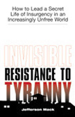

|
Invisible Resistance to Tyranny is a guide for would-be freedom fighters in today's climate of governmental intolerance of dissidence. And what exactly is "invisible resistance"? From the cover of this book:
My own experience with Paladin Press publications is that they are usually very straight-forward, informative, and specific works. Given the source, and the "how to" in the title, I expected this one to uphold the Paladin reputation. It mostly does. Resistance is a fast, easy read. It doesn't bog down in intricate, intellectual discourse for its own sake; Mr. Mack states his ideas clearly and succinctly. The first one hundred pages make a a fine introduction to the concept of covert resistance operations for someone new to the idea. Against the backdrop of 9-11, Mr. Mack makes a careful and necessary distinction between legitimate actions against abusive governments (and its agents, official and otherwise) and criminal terrorism, violence directed towards those oblivious to freedom or even themselves victims of the same government - innocent citizens, that is. Mack doesn't get bogged down in philosophical debates on whether or not complacent citizens are part of the problem of tyranny. He points out that, as a practical matter, those citizens see themselves as innocent and a freedom fighter has to work with the universe as it is. The remainder of the first hundred pages is somewhat less useful. Resistance dismisses publicly outspoken activists as useless when things get nasty, on the assumption that they'll be taken into custody immediately, leaving it to the unknown freedom fighters to save the day. He misses the valuable roles such activists can fill. All those invisible freedom fighters are going to need someone to interface with the outside world, using PR to get the message out. This blind spot causes Mr. Mack to completely skip over the publicity, communication, and coordination tools which the public figures can provide. It also glosses over the risk the known dissidents are taking on behalf of the covert operatives. The next several pages of Resistance have a slightly schizoid quality, as Mr. Mack urges the invisible resistor to engage in civil disobedience to complicate govgoons' lives and waste gov resources, yet obey laws to maintain a low profile. This is a valid approach, but I suspect most people buying a resistance "how-to" will be hoping for more detailed advice on achieving the balance that does the most damage to government while keeping their tender butts out of jail. From civil disobedience, Mr. Mack works his way through government indoctr... schools (I like his emphasis on homeschooling, but I am very uncomfortable with his advice on working within the public school system, with administrators and teachers, to achieve pro-freedom change.), dismisses voting as nearly useless to freedom (true), brushes off communication with most politicians (I tend to agree, but think it can't hurt to remind them that we're watching them.), taxes, and political action groups. Sadly, I found most of this a little too accepting of the gov status quo for my taste. His defense of Führer Dubya's post 9-11 attacks on liberty as Constitutional struck me as weirdly bizarre. I'm an anarchist myself, but I think Mr. Mack might do well to take another look at the Bill of Rights. It's only some twenty-five pages out of a hundred forty-four, but this resistance "How to" finally lives up to its name. Mack correctly observes that an anonymous resistance is never going to conduct a successful gov-tossing revolution, but can certainly work to keep a government honest. And proceeds to highlight the sorts of underground action that does that, including the classic underground railroad to help goon-targets dodge goons. We get a look at what kinds of "administrative support" an underground resistance needs; emphasis is placed on intelligence and information gathering. Public relations gets a fair bit of attention, but could use some more details. Mr. Mack's suggestions on communications would be much more helpful if he had noted the gov's ability to intercept and track most forms of wired communications (that includes telephones and email) and given tips on dodging the taps. While mentioned, encryption got short shrift; proper use of encryption deserves a full chapter just on its own. Mr. Mack also discusses the bane of resistance: Networking; expanding your covert contacts without getting nailed. What he says is right, and darned important. But like many areas of Resistance, he simply doesn't go sufficiently in-depth for a "how-to" manual. In the wake of Assassination Politics and Paladin Press's own Hitman difficulties, I was pleased to see that Mack did have the cojones to address the use of lethal force - assassination - to further one's freedom goals. Presumably on the assumption that someone who is considering offing an agent of gov has already waded through the moral and ethical aspects, Resistance goes straight to tactical considerations: Will a killing move you closer to your goals, or generate too much sentiment - or excessive governmental retaliation -against your agenda? Who should be left alone? Mack has useful ideas on this.
As a self-proclaimed "how-to" Invisible Resistance to
In its current form, Resistance would be better re-subtitled to read "An Introduction to Insurgency Concepts". It's a good book, and will start activists thinking along lines that are likely to extend their life expectancy. If you have ideas of going into this business, get the book. But don't expect a detailed "how-to" for guerrilla freedom fighters.
But if Mr. Mack produces a second edition of Resistance, I suspect that it will be a good "how-to" manual, and that I'll buy it.
So should you.
Did you like this article?
If there's anything specific you'd like to say about this article, please do so here. Comments may be used in an upcoming Letters to the Editor.
|